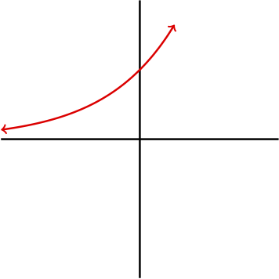
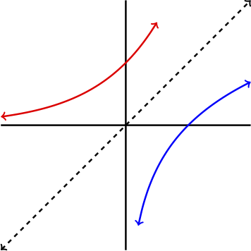
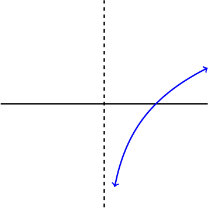

This section is all about taking everything you have learned thus far about exponential and logarithmic functions and applying it to solve real world problems.
SubsectionGraphs, Domain, and Range
In order to use the logarithm function in applications, it is useful to understand a few properties about the logarithm including its graph, domain, and range. Recall that the logarithm function is the inverse of an exponential function. Therefore, it may be helpful to first consider the graph of the function \(f(x)=e^x\text{.}\) Figure221A graph of the function \(f(x)=e^x.\) From our previous understanding of exponential functions, we know that the domain of the function \(f(x)=e^x \) is \((-\infty,\infty)\) and the range is \((0,\infty)\text{.}\) Since the function \(g(x)=\ln(x) \) is the inverse of the function \(f(x)=e^x \) we know that the domain of \(g(x)=\ln(x) \) must be \((0,\infty)\) and the range must be \((-\infty,\infty)\text{.}\) Furthermore, the graph of the function \(g(x)=\ln(x) \) must look like a reflection of the graph \(f(x)=e^x\) reflected through the line \(y=x\text{.}\) Figure222A graph of the function \(f(x)=e^x\) (red), the line \(y=x\) (dashed), and \(g(x)=\ln(x)\text{.}\)
Inspecting the graph and realizing that the domain of \(g(x)=\ln(x) \) is \((0,\infty)\text{,}\) we are in the position to see that the graph of \(g(x)=\ln(x)\) actually has a vertical asymptote at \(x=0\text{.}\) Figure223A graph of the function \(g(x)=\ln(x)\text{.}\) Knowing these properties of the logarithm will be important for understanding some applications.
SubsectionApplications of the Logarithm
Since this section is about applying what is already known, let's work through a problem together.
Example224
According to recent research published by the Nature Publishing Group, the concentration of microplastic in the Great Pacific garbage patch (GPGP) is growing exponentially. In the year 1990 the concentration of micropastic was \(.4 \text{kg}/\text{km}^2\text{,}\) and in 2015 the concentration was \(1.2 \text{kg}/\text{km}^2\text{.}\)
Find a formula for the concentration in \(\text{kg}/\text{km}^2\) of microplastics in the GPGP \(t \) years after 1990.
How long will it take for the concentration to double?
The information provided in the problem is giving us two points on the graph of our exponential function. Starting with the exponential \(A(t)=a(b)^t\text{,}\) we begin trying to find the values of \(a\) and \(b \text{.}\) Since the function is to be in years since 1990, and the first value they gave us was for the year 1990, we immediately know the value of \(a \text{.}\) Thus, our function now is read
\begin{equation*}
A(t)=.4(b)^t.
\end{equation*}
Since 2015 is \(\alert{25}\) years after 1990, the second point they gave us now yields the equation
Now, do not be fooled into thinking logarithms are needed for this equation. We only need logarithms when the unknown value is in the exponent, but the unknown here is the base. So, we simply divide each side by .4 and take the 25th root of each side. These steps look as follows: \begin{align*} 1.2\amp = .4(b)^{25}\\ \frac{1.2}{.4}\amp = b^{25}\\ \sqrt[25]{3}=b \end{align*} Then our formula is
To identify the doubling time, we simply set our function equal to .8 as this is double the inital concentration of .4. Solving as we did in the previous section we have: \begin{align*} .8\amp =.4(\sqrt[25]{3})^t\ \ \text{now divide both sides by .4}\\ 2\amp = (\sqrt[25]{3})^t\ \ \text{apply log to each side}\\ \log(2)\amp = \log(\sqrt[25]{3})^t\ \ \text{use properties of logarithms to pull down t}\\ \log(2)\amp = t\cdot \log(\sqrt[25]{3})\ \ \text{divide each side by log(1.045)}\\ \frac{\log(2)}{\log(\sqrt[25]{3})}\amp = t. \end{align*} Thus, we see that \(t \approx 15.75\ \text{years}\text{.}\)
Subsection
There will be several more examples covered in your course packet. This is often a scary section as word problems can seem a bit overwhelming. To help pick out information which is important and understand what the problems are asking you to do, try following a procedure like the one given below:
Tips for Starting Word Problems
Identify the units of the input and output of the function given, or the function you are instructed to make.
If you are told to make a function, write down the general form of the function you are asked to make. For example, if told to make an exponential function, start by writing \(A(t)=a(b)^t\text{.}\)
Plug in all given information, and think about what exactly you are being instructed to do.
Once you have the final answer, go back to the problem and make sure your answer makes sense in the context of the problem.
SubsectionReferences
Lebreton, L., Slat, B., Ferrari, F., Sainte-Rose, B., Aitken, J., Marthouse, R., Hajbane, S., Cunsolo, S., Schwarz, A., Levivier, A., Noble, K., Debeljak, P., Maral, H., Schoeneich-Argent, R., Brambini, R. and Reisser, J. Evidence that the Great Pacific Garbage Patch is rapidly accumulating plastic. Scientific Reports. 8, 4666, https://doi.org/10.1038/s41598-018-22939-w (2018)